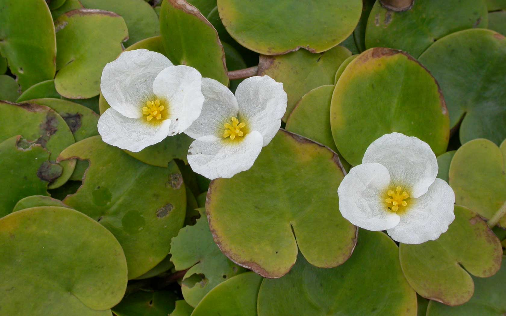
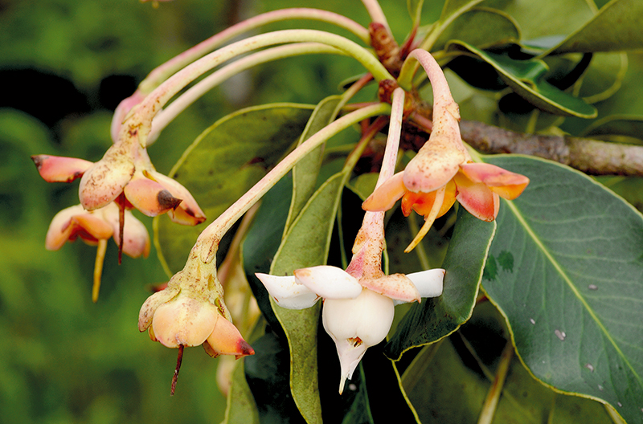

สมุนไพรหายากเสี่ยงสูญพันธ์

ถั่วดินโคก
ไม้พุ่มขนาดเล็ก สูง 15-30 เซนติเมตร ลำต้นสั้นมาก ใบประกอบแบบขนนก เรียงสลับ แนบกับพื้นดินเป็นแนวรัศมี ใบย่อย 9-13 ใบ รูปวงรี รูปไข่หรือรูปขอบขนานแกมวงรี ใบย่อยปลายใบรูปไข่กลับ กว้าง 1.5-3 เซนติเมตร ยาว 2-5 เซนติเมตร ผิวใบมีขนละเอียดสีขาว ดอกช่อกระจะ ออกที่ปลายยอด ดอกย่อยจำนวนมาก กลีบดอกรูปดอกถั่ว สีม่วงเข้ม ก้านช่อดอกยาว ผลเป็นฝักรูปขอบขนาน มีขนละเอียดสีขาว มีเมล็ดเดียว
สรรพคุณ
ยาสมุนไพรพื้นบ้านจังหวัดอุบลราชธานีใช้รากฝนกับน้ำดื่มช่วยลดไข้ในเด็กฝนทาแก้พิษงู(ความเชื่อส่วนบุคคล)ต้มน้ำดื่มบำรุงน้ำนม(กินมากไม่ดี)รากเหง้าลำต้นใบฝนทาฝียาพื้นบ้านอีสานใช้รากฝนน้ำทาแก้ฝี

เทพทาโร
เทพทาโรเป็นไม้ยืนต้นขนาดกลาง ไม่ผลัดใบ เรือนยอดเป็นพุ่มกลับทึบ ใบมีสีเขียวเข้ม ลำต้นเรียบไม่มีพูพอน เปลือกต้นสีเทาอมเขียวหรืออมน้ำตาล ค่อนข้างเรียบ แตกเป็นร่องยาวตามลำต้น เมื่อถากเปลือกออกจะมีกลิ่นหอม กิ่งมีลักษณะอ่อนเรียว เกลี้ยงและมักมีคราบขาว ใบเป็นชนิดใบเดี่ยว ออกเรียงสลับกัน เป็นใบรูปรีแกมรูปไข่
สรรพคุณ
ผลสุก น้ามาท้าน้้ามันเทพทาโร มีสรรพคุณต่างๆ มากมาย ใช้แล้วได้ผล - ใช้ทา ขับลม แก้ปวดท้อง ปวดเมื่อย แก้ริดสีดวงทวาร - ใส่แผลสด ไฟไหม้ น้้าร้อนลวก - ชุบส้าลีหยอดหูแก้น้้าหนวก ขับน้้ามูก ไซนัส - กินขับเสลด แก้จุกเสียด ปวดท้อง
มะตู่มนิ่ม
มะตูมนิ่ม เป็นไม้ยืนต้นสูง 10-15 เมตร ใบเดี่ยว ออกเรียงสลับ รูปรี หรือรูปใบหอกปลายแหลม โคนมน ขอบหยัก ใบมีกลิ่นหอม ยอดอ่อนกินเป็นผักสดกับน้ำพริกได้ ในทางไสยศาสตร์ถือว่า ใบของมะตูมทุกชนิด ใช้ป้องกันเสนียดจัญไร ขับภูตผีปีศาจได้ ดอกเป็นสีขาวมีกลิ่นหอมแรงและหอมไกล ออกเป็นช่อตามซอกใบและปลายยอด “ผล” รูปกลมรีคล้ายไข่ ผลอ่อนสีเขียว เปลือกแข็ง
สรรพคุณ
สรรพคุณทางสมุนไพร ผลสดสุกมีรสฝาดหวานกินเป็นยาอายุวัฒนะ บำรุงกำลัง ช่วยให้เจริญอาหาร ขับผายลมดีมาก โดยให้เอาผลสดสุก 1 ผล หรือ 2 ผล ต้มกับน้ำท่วมยาจนเดือดดื่มต่างน้ำ หรือจะดื่มแทนน้ำชาก็ได้

มะหาด
มะหาดเป็นพืชที่มีถิ่นกำเนิดในเขตร้อนของภูมิภาคเอเชียใต้ เช่น อินเดีย ศรีลังกา และ บังคลาเทศ แล้วมีการแพร่กระจายพันธุ์ไปในเขตร้อนของประเทศแถบเอเชียตะวันออกเฉียงใต้ พม่า,ไทย,ลาว,กัมพูชา,มาเลเซีย เป็นต้น โดยทั่วไปแล้ว มักพบมะหาดขึ้นทั่วไปในที่กึ่งโล่งแจ้งตามป่าดงดิบ ปาเต็งรัง ป่าเบญจพรรณ และป่าหินปูน ที่มีความสูงจากระดับน้ำทะเลประมาณ 100-1,800 เมตร สำหรับในประเทศไทยมักพบมะหาดมาก ทางภาคตะวันออกเฉียงใต้ ภาคตะวันตกเฉียงใต้ และทางภาคใต้ของประเทศไทย
สรรพคุณ
ต้านสารอนุมูลอิสระ
ยับยั้งการทำงานของเอนไซมไทโรซิเนส
ยับยั้งการสังเคราะห์เอนไซมไทโรซิเนส
ยับยั้งกระบวนการเกิดเม็ดสีเมลานิน
ชะลอความเสื่อมของเซลล์

เร่ว
ต้นเร่ว จัดเป็นพืชล้มลุก มีเหง้าหรือลำต้นอยู่ใต้ดิน เป็นพืชที่เจริญเติบโตได้ดีในดินทุกชนิด โดยเฉพาะในดินร่วนซุยในที่ร่มรำไร นิยมขยายพันธุ์ด้วยวิธีการใช้เหง้าหรือหน่อมากกว่าการใช้เมล็ด ในประเทศไทยสามารถพบได้ทางภาคอีสาน ภาคเหนือ และภาคกลาง
สรรพคุณ
ช่วยขับน้ำนมหลังการคลอดบุตรของสตรี (เมล็ด)
เมล็ดและผลของเร่วใหญ่สามารถนำมาใช้เป็นเครื่องเทศได้
สามารถนำมาผลิตหรือใช้ทำเป็นส่วนประกอบในผลิตภัณฑ์เครื่องสำอาง น้ำมันหอมระเหย และผลิตภัณฑ์อาหาร
หัวร้อยรู
เป็นพืชจำพวกหัว ที่อาศัยเกาะตามต้นไม้อื่น ต้นแก่มีหัวกลมโตขนาดเท่าลูกมะพร้าวห้าว ภายในหัวเป็นรูย้อนขึ้น ย้อนลง พรุนไปทั่ว เมื่อผ่าออกดู มักมีมดดำอาศัยอยู่เต็มหัว ต้องนำมาแช่น้ำทิ้งไว้จนกว่ามดจะออกไปหมด เนื้อนิ่ม สีน้ำตาลไหม้ มักขึ้นตามคาคบไม้ หัวมีรสเมา
สรรพคุณ
หัวบำรุงหัวใจ ขับชีพจร ขับพยาธิ แก้พิษในข้อในกระดูก แก้พิษประดง แก้ข้อเข่าข้อเท้าบวม รักษามะเร็ง
หัวร้อยรู จัดอยู่ใน “พิกัดมหากาฬทั้ง 5” คือการจำกัดตัวยารักษากาฬ 5 อย่างมี หัวถั่วพู หัวกระเช้าผีมด หัวร้อยรู มหากาฬนกยูง มหากาฬใหญ่ สรรพคุณ ดับพิษร้อน ถอนพิษไข้ แก้พิษอักเสบ ช้ำบวม แก้พิษไข้ ไข้กาฬ ประดงผื่นคัน น้ำเหลืองเสีย
กระทุ่มน้ำ
กระทุ่มนา กระท่อมขี้หมู หรือ ตุ้มแซะ (ชื่อวิทยาศาสตร์: Mitragyna diversifolia) เป็นพืชในวงศ์เข็ม ลักษณะเป็นไม้ต้น สูง 8–15 เมตร หูใบรูปขอบขนาน ยาว 1–1.5 เซนติเมตร ใบเป็นใบเดี่ยวรูปไข่หรือรูปรี ออกเรียงตรงข้าม ยาว 5–16 เซนติเมตร ก้านใบยาว 1–2.5 เซนติเมตร ดอกออกเป็นช่อแบบช่อกระจุกแน่น เรียงคล้ายช่อกระจุกแยกแขนงสั้น ๆ
สรรพคุณ
แก้ท้องร่วง แก้บิดมูกเลือด เปลือกต้นใช้รักษาโรคผิวหนัง คุดทะราด
ขันทองพยาบาล
ประเภทไม้ยืนต้นขนาดกลาง กิ่งก้านกลม เปลือกเกลี้ยง สีเทา ใบเดี่ยวแข็งหนาดกทึบ เป็นดอกเล็ก ๆ เป็นช่อแผ่ออก ผลกลมเท่าลูกพุทรา มี 3 พู เมื่อผลแก่จะมีสีส้มและแตกออก
สรรพคุณ
ในการรักษา แก้ลมพิษ แก้โรคเรื้อน โรคผิวหนังทุกชนิด แก้ไข้ และแก้กามโรค

จุกโรนี
จัดเป็นไม้ล้มลุกที่มีลำต้นเลื้อยทอดไปตามต้นไม้ เถากลมสีเขียว ตามข้อเถามีรากงอกออก มีไว้สำหรับใช้ยึดเกาะ ขยายพันธุ์ด้วยวิธีการเพาะเมล็ด สามารถพบได้ตามป่าดงดิบทั่วไป ป่าชายเลน ป่าแพะ และป่าเบญจพรรณ
สรรพคุณ
ทั้งต้น รสฝาดสุขุม ต้มน้ำดื่ม แก้ปวดท้อง เนื่องจากโรคกระเพาะอาหารอักเสบ ใบ รสฝาดสุขม ใช้เป็นยาฝาดสมาน แก้ท้องร่วง แก้ท้องเดิน แก้บิด แก้อาเจียน แก้ปวดเบ่ง มูกเลือด เสมหะผิดปกติ ใช้ภายนอกเป็นยาสมานแผล

ชะเอมไทย
เถา มีตุ่มหนามด้านๆขนาดเล็กตามลำต้นและกิ่งก้าน เปลือกไม้ผิวขรุขระสีน้ำตาล เนื้อไม้สีเหลืองอ่อนๆ มีรสหวาน
สรรพคุณ
ใช้ เนื้อไม้ แก้โรคในลำคอ แก้ลม แก้เลือดออกตามไรฟัน บำรุงธาตุและบำรุงกำลัง แก้อ่อนเพลีย บำรุงกล้ามเนื้อให้เจริญ แก้ไอ ขับเสมหะ แก้น้ำลายเหนียว ต้น รสหวานเอียน ถ่ายลม แก้โรคในคอ ทำผิวหนังให้สดชื่น แก้โรคตา ราก มีรสหวาน ทำให้ชุ่มคอ แก้กระหายน้ำ และเป็นยาระบาย มีสรรพคุณแก้ไอ ขับเสมหะ แก้เจ็บคอ แก้โลหิตอันเน่าในอุทร และเจริญซึ่งหทัยวาตให้สดชื่น แก้กำเดาให้เป็นปกติ

ชิงชี่
ไม้พุ่มหรือกึ่งเลื้อย สูง 2-6 เมตร กิ่งก้านอ่อนมีสีเขียว ผิวเรียบเกลี้ยง กิ่งคดไปมา มีหนามยาว 2-4 มิลลิเมตร ตรงหรือโค้งเล็กน้อย ลำต้นสีเทา ผิวเปลือกเป็นกระสีขาว แตกระแหง ใบเป็นใบเดี่ยว เรียงสลับ รูปขอบขนาน รูปรี หรือรูปไข่ กว้าง 3-15 เซนติเมตร ยาว 9.5-24 เซนติเมตร ปลายใบมนหรือแหลม หรือเว้าเล็กน้อยแล้วเป็นติ่ง โคนใบสอบมนหรือค่อนข้างเว้า ขอบใบเรียบเป็นคลื่นเล็กน้อย เนื้อใบค่อนข้างหนา มัน เกลี้ยง หลังใบเรียบเป็นมัน ท้องใบเรียบ ก้านใบยาว 0.7-1 เซนติเมตร ดอกเดี่ยว ออกเรียงเป็นแถว 1-7 ดอก
สรรพคุณ
ตำรายาไทย ราก รสขมขื่น แก้โรคที่เกิดในท้อง ขับลมภายใน แก้ไข้ร้อนทุกชนิด ไข้พิษ แก้โรคตา โรคกระเพาะ รักษามะเร็ง ช่วยให้มดลูกเข้าอู่ และเป็นยาบำรุงหลังคลอดบุตร แก้ไอเนื่องจากหลอดลมอักเสบ แก้หืด รากชิงชี่ใช้ใน “พิกัดเบญจโลกวิเชียร” (ยาแก้วห้าดวง หรือยาห้าราก) ซึ่งได้จากรากไม้ 5 ชนิดคือ รากชิงชี่ รากคนทา รากเท้ายายม่อม รากมะเดื่อชุมพร และรากย่านาง มีสรรพคุณ แก้ไข้ต่างๆ กระทุ้งพิษหรือถอนพิษต่างๆ ทั้งต้น รสขื่นปร่า ตำพอกแก้ฟกช้ำ บวม แก้ไข้ ขับน้ำเหลืองเสีย ใบ รสเฝื่อนเมา เข้ายาอาบ แก้โรคผิวหนัง รักษาประดง ใบต้มดื่ม แก้โรคผิวหนัง แก้สันนิบาต ไข้ฝีกาฬ แก้ตะคริว ใบเผาเอาควันสูดแก้หลอดลมอักเสบ ไข้พิษ ฝีกาฬ ไข้สันนิบาต รากและใบ แก้หืด แก้เจ็บในทรวงอก เป็นยาระงับความร้อน กระทุ้งพิษไข้ออกหัด อีสุกอีใส ตำพอกแก้ฟกช้ำบวม ดอก รสขื่นเมา แก้มะเร็ง ผลดิบ รสขื่นปร่า แก้โรคในลำคอ เจ็บคอ ลำคออักเสบ

ตับเต่า
ตับเต่าต้น ต้นมีลักษณะทรงพุ่มโปร่งเป็นรูปกรวย เปลือกต้นเป็นสีน้ำตาลปนเทา เปลือกด้านในเป็นสีน้ำตาลอมแดง ใบเดี่ยว รูปไข่กว้าง โคนใบกลมหรือคล้ายรูปหัวใจ เนื้อใบเกลี้ยงและหนา ดอกเป็นแบบแยกเพศ อยู่กันคนละต้น
สรรพคุณ
ใช้ปรุงเป็นยารักษาแผลเรื้อรังยาแก้ไข้ ลดไข้ ดับพิษร้อน แก้ร้อนใน แก้พิษไข้ แก้พิษทั้งปวง ยาแก้วัณโรค ยาบำรุงปอด ยาแก้อาเจียนเป็นเลือดและถ่ายเป็นเลือด ยารักษาแผลเรื้อรัง

นางแย้มป่า
นางแย้มป่าเป็นพันธุ์พืชที่มีถิ่นกำเนิดในประเทศไทยแล้วมีการแพร่กระจายพันธุ์ไปยังบริเวณเขตร้อนใกล้เคียง เช่น อินเดีย ฟิลิปปินส์ อินโดนีเซีย มาเลเซีย เป็นต้น สำหรับในประเทศไทยสามารถพบได้ทั่วทุกภาคของประเทศไทย ตามป่าดิบป่าเบญจพรรณหรือตามชายป่าต่างๆ ที่มีความสูงไม่เกิน 1100 เมตรจากระดับน้ำทะเล รวมถึงที่โล่งที่มีความชื้น หรือบริเวณใต้ต้นไม้ใหญ่ที่มีพุ่มทึบและมีความชื้นในดินสูง
สรรพคุณ
เป็นยาแก้ไข้
ช่วยรักษาลำไส้อักเสบ
ช่วยขับปัสสาวะ
แก้ไตพิการ
ใช้ขับระดูในสตรี
แก้เหน็บชา
แก้ปวดข้อ
แก้โรคเริม งูสวัด
แก้โรคผิวหนัง ผื่นคัน
แก้ไตพิการ
แก้กระดูกสันหลังอักเสบเรื้อรัง
แก้ปวดเอว และปวดข้อ
ขับปัสสาวะ
แก้พิษ
รักษาโรคริดสีดวงทวาร

ปลาไหลเผือก
รากกลมโต สีขาว สีขาวนวล รากที่มีอายุหลายปีจะมีความยาวมาก อาจยาวมากกว่า 2 เมตร รากมีรสขม เบื่อเมาเล็กน้อย
สรรพคุณ
ตำรายาไทย: ใช้ ราก รสขม เบื่อเมาเล็กน้อย ถ่ายพิษต่างๆ ถ่ายฝีในท้อง ถ่ายพิษไข้พิษเสมหะ และโลหิต แก้ไข้ แก้ไข้มาลาเรีย ตัดไข้ทุกชนิด แก้ลม แก้วัณโรคระยะบวม ขับเหงื่อ ขับพยาธิ แก้ต่อมทอนซิลอักเสบ แก้เจ็บคอ ความดันเลือดสูง อัมพาต ขับถ่ายน้ำเหลือง แก้ท้องผูก
ยาสมุนไพรพื้นบ้านจังหวัดอุบลราชธานี: ใช้ ราก ต้มน้ำดื่ม แก้ไข้ ฝนน้ำดื่ม แก้ปวดท้อง

พังคี
เป็นไม้พุ่มขนาดเล็ก ในวงศ์ EUPHORBIACEAE ลำต้นตรงสูงราว 20-40 ซม. เปลือกต้นสีเทา
ใบ เป็นใบเดี่ยว ทรงรี ขึ้นเรียงตรงข้ามกันตามกิ่ง ก้านใบยาว 2-3 ซม. สีเหลือง ผืนใบสาก กว้าง 3-5 ซม. ยาว 6-9 ซม. โคนใบมนเว้าเล็กน้อย ปลายแหลม ขอบใบจักตื้น มีเส้นแขนงใบ 3-5 คู่
สรรพคุณ
ช่วยแก้อาการจุกเสียด แก้ท้องอืด ท้องเฟ้อ ปวดท้อง รากใช้ตำประคบแก้อาการปวด ผลมะคังแดง

มะคังแดง
ไม้ยืนต้น กึ่งไม้พุ่ม ขนาดกลาง สูง 6-12 เมตร ใบดกหนาทึบ ลำต้นและกิ่งก้านสีน้ำตาลแดง มีขนนุ่มๆเหมือนกำมะหยี่สีน้ำตาลแดงปกคลุมทั่วไป โคนต้นและกิ่งมีหนามโดยรอบ หนามขนาดใหญ่ พุ่งตรงออกเป็นระยะ ใบเดี่ยว เรียงตรงข้าม รูปวงรีหรือรูปไข่กลับ กว้าง 8-15 เซนติเมตร ยาว 15-22 เซนติเมตร ผิวใบมีขนทั้งสองด้าน มีหูใบอยู่ระหว่างก้านใบ โคนใบมน หลังใบเรียบ ท้องใบมีขนสีขาวปกคลุม ขอบใบเรียบ ก้านใบมีขนสีขาว มีหูใบเป็นรูปสามเหลี่ยมหลุดร่วงง่าย
สรรพคุณ
ยาสมุนไพรพื้นบ้านจังหวัดอุบลราชธานี ใช้ เปลือกต้น เข้ายากับมุ่ยขาว ทำเป็นลูกกลอน แก้ปวดเส้นเอ็น อัมพฤกษ์ อัมพาต แก้ริดสีดวงทวาร แก่น ต้มน้ำดื่มแก้ปวดเมื่อย แก้ปวดประจำเดือน แก่นผสมกับมุ่ยขาว มุ่ยแดง หนามแท่ง เล็บแมว เงี่ยงปลาดุก รักษาโรคกระเพาะอาหาร มะเร็ง

สะค้าน
สะค้านพบได้ในทุกภาคของประเทศไทย ที่มีสภาพป่าดิบชื้น โดยพืชสกุลพริกไทยส่วนใหญ่แล้วมีแหล่งที่สำรวจพบอยู่ในเขตร้อนชื้น จากการสำรวจความหลากหลายในประเทศไทยจนถึงปัจจุบันซึ่งรวบรวมไว้ใน “หนังสือพืชสกุลพริกไทยในประเทศไทย” พืชสกุลพริกไทยในประเทศไทยทั้งสิ้น 42 ชนิด และอีก 1 ตัวอย่าง ที่ยังไม่สามารถระบุชนิดได้
สรรพคุณ
บรรเทาอาการท้องอืด ท้องเฟ้อ บำรุงธาตุ แก้ธาตุให้ปกติ

สารภีป่า
ไม้ยืนต้นขนาดเล็กถึงขนาดกลาง ไม่ผลัดใบ สูงถึง 25 เมตร ลำต้นคดงอ แตกกิ่งต่ำ เปลือกต้นเรียบหรือแตกเป็นร่องตื้นไม่เป็นระเบียบ อาจมีรอยแตกลึกเป็นลวดลายละเอียด บางครั้งเปลือกสีครีมค่อนข้างเรียบ เปลือกในสีแดงปนน้ำตาล ใบเดี่ยว เรียงเวียน กว้าง 2.5-5.5 เซนติเมตร ยาว 6-15 เซนติเมตร มักจะพบหนาแน่นที่ปลายกิ่ง ใบสีเขียวเข้ม แผ่นใบหนาคล้ายแผ่นหนัง ผิวเรียบและเป็นมัน ลักษณะมนรีแคบ ขอบใบไม่มีซี่บางครั้งอาจเป็นซี่ป้านๆ เส้นใบข้างมักจะอยู่ชิดขนานกัน ปลายใบแหลม ฐานใบสอบ
สรรพคุณ
ตำรายาไทย เปลือก และดอก ใช้ถ่ายพยาธิ แก้บิด และแก้ไข้
ตำรายาพื้นบ้านล้านนา ทั้งต้น ผสมสมุนไพรจำพวกประดง รวม 9 ชนิด ต้มน้ำดื่มรักษาโรคประดง

อบเชยไทย
ที่เราเห็นและใช้กันนั้น นำมาจากส่วนที่เป็นเปลือกของพืชในสกุล Cinnamomum ในวงศ์ Lauraceae ทำให้บางคนเรียกมันอีกอย่างว่า ซินนามอน โดยต้นอบเชยนั้น เป็นไม้ยืนต้น สภาพธรรมชาติทรงพุ่มอาจสูงตั้งแต่ 10-15 เมตร เส้นผ่าศูนย์กลางลำต้นประมาณ 30-50 เซนติเมตร แต่หากเป็นอบเชยที่ถูกปลูก เพื่อเน้นการเอาเปลือกลำต้น และเปลือกกิ่งมาใช้งาน
สรรพคุณ
ช่วยสมานแผล ป้องกันอาการท้องร่วง มีฤทธิ์ต้านอนุมูลอิสระ ต้านการอักเสบ หรือลดระดับน้ำตาลในเลือด

เฉียงพร้านางแอ
เป็นไม้ยืนต้นขนาดกลางถึงขนาดเล็ก ไม่ผลัดใบ มีความสูงประมาณ 25-30 เมตร และสูงได้ถึง 35 เมตร ลำต้นเปลา ตั้งตรง เป็นทรงเรือนยอดทรงพุ่มรูปกรวยกว้างทึบ เปลือกต้นสีน้ำตาลอมแดงถึงสีน้ำตาลอมเทา ผิวเรียบ และมีรูอากาศมาก หรือเปลือกต้นอาจหนาแตกเป็นร่องลึกตามยาว
สรรพคุณ
ใช้แก้โลหิตปิดธาตุ
แก้ไข้
ช่วยขับเสมหะ
แก้ร้อนในกระหายน้ำ
แก้บิด
ช่วยสมานแผล
แก้พิษผิดสำแดง
ช่วยบำรุงร่างกาย
ช่วยเจริญอาหาร
ช่วยขับลม ระบายความร้อน

เถาเอ็นอ่อน
ไม้เลื้อยพาดพันต้นไม้อื่น เปลือกเถาเรียบสีน้ำตาลอมดำ พอแก่เปลือกจะหลุดล่อนออกเป็นแผ่น ทุกส่วนของต้นมี น้ำยางสีขาว ใบ เป็นใบเดี่ยวออกตรงข้ามกัน ใบรูปรี ปลายใบมนมีหางสั้น โคนใบสอบ หลังใบเรียบเป็นมันและลื่น ท้องใบเรียบสีขาลนวล ก้านใบสั้น ดอก ออกเป็นดอกช่อ ตามซอกใบ ดอกย่อยสีเหลืองอ่อน กลีบดอก 5 กลีบ โคนกลีบดอกเชื่อมติดกัน กลีบเลี้ยงสีเขียว 5 กลีบ
สรรพคุณ
เถา - ต้มรับประทานเป็นยาแก้เมื่อย ทำให้เส้นเอ็นหย่อน จิตใจชุ่มชื่น เป็นยาบำรุงเส้นเอ็นในร่างกายให้แข็งแรง แก้เส้นเอ็นพิการ
ใบ - ใช้โขลกให้ละเอียด ห่อผ้าทำลูกประคบ ประคบตามเส้นเอ็นที่ปวดเสียวและตึงเมื่อยขบ ทำให้เส้นยืดหย่อนดี

เปราะหอม
พืชล้มลุก อายุปีเดียว มีลำต้นเป็นหัวอยู่ใต้ดิน เรียกว่า เหง้า เนื้อภายในสีเหลืองอ่อน มีสีเหลืองเข้มตามขอบนอก มีกลิ่มหอมเฉพาะตัว ใบเป็นใบเดี่ยว แทงขึ้นจากเหง้าใต้ดิน 2-3 ใบ แผ่ราบไปตามพื้นดิน หรือวางตัวอยู่ในแนวราบเหนือพื้นดินเล็กน้อย ใบมีรูปร่างค่อนข้างกลมหรือรูปไข่ป้อม ปลายใบแหลม โคนใบมนหรือเว้าเล็กน้อย มีขนอ่อนบริเวณท้องใบ บางครั้งอาจพบขอบใบมีสีแดงคล้ำ
สรรพคุณ
ใช้เป็นยาบำรุงหัวใจ บำรุงประสาท ด้วยการใช้หัวผสมลงในยาหอม
อ้างอิง
http://www.thaicrudedrug.com/
http://www.phargarden.com/